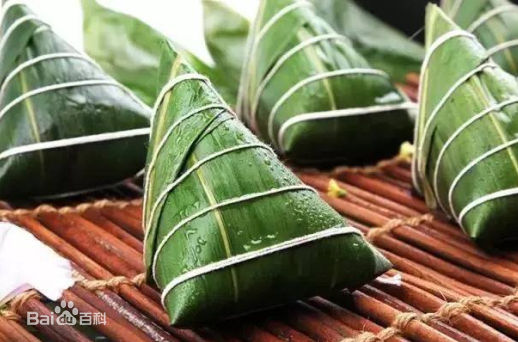
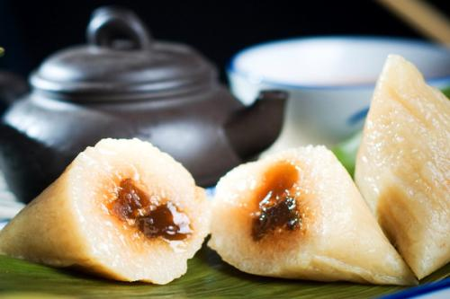

◆粽，古作“糉”，也称“角黍”、“筒粽”等，其由来已久，花样繁多。古人以柊叶、箬叶或菰芦叶包裹稻米 （或黍）煮成，尖角，如心之形，曰糉（粽）。《山海经.南山经》：凡鹊山之首，自招摇之山以至箕尾 之山，凡十山，二千九百五十里，其神状皆鸟身而龙首。其祠之礼：毛，用一璋玉瘗；糈用稌米，一壁， 稻米、白莹为席。粽，属“籺”的一种，籺是人们在逢年过节时用来拜神祭祖的贡品，逢年过节做籺拜神祭 祖是古老的传统习俗。籺有很多品种，不同的节日会做不同的籺。 
◆粽最初是用来端午祭祀神灵祖和先；到了晋代时已经普及到全国各地并被正式定为端午节庆食物。晋周处 的《风土记》：“仲夏端午，烹鹜角黍。”用菰叶（茭白叶）包黍米成牛角状，称"角黍"；用竹筒装米密封 烤熟，称"筒粽"。东汉末年，以草木灰水浸泡黍米，因水中含碱，用菰叶包黍米成四角形，煮熟，成为广 东碱水粽。
◆“粽”字本作“糉”，历史上跟粽子沾边儿的文字记载，最早大概见于汉代许慎的《说文解字》，将之解释为 “芦叶裹米也”。西晋新平太守周处所写的《风士记》，则明确提到了“角黍”一词：“仲夏端五，方伯协极。 享用角黍，龟鳞顺德。”
◆晋代时，粽籺被正式定为端午节食品，时人周处《岳阳风土记》记载："俗以菰叶裹黍米，……煮之，合烂熟 ，于五月五日至夏至啖之，一名粽，一名黍。"南北朝时期，出现杂粽。米中掺杂禽兽肉、板栗、红枣、赤 豆等，品种增多。粽子还用作交往的礼品。
 ◆到了唐代，粽子的用米，已"白莹如玉"，其形状出现锥形、菱形。日本文献中就记载有"大唐粽子"。 宋朝时，已有"蜜饯粽"，即果品入粽。诗人苏东坡有"时于粽里见杨梅"的诗句。这时还出现用粽子堆 成楼台亭阁、木车牛马作的广告，说明宋代吃粽子已很时尚。
◆明清两代，粽子成了吉祥食品。清 屈大均《广东新语》：“五月自朔至五日，以粽心草系黍，卷以柊叶。” 相传，那时凡参加科举考试的秀才，在赴考场前，要吃家中特意给他们包的“笔粽”，样子细长很像毛笔，谐 音“必中”，为的是讨个口彩。
◆至今，每年五月初，中国百姓家家都要浸糯米、洗粽叶、包粽子，其花色品种更为繁多。从馅料看，北方多 包小枣的北京枣粽；南方则有豆沙、鲜肉、火腿、蛋黄等多种馅料，其中以浙江嘉兴粽子为代表。吃粽子的 风俗，千百年来，在中国盛行不衰，而且流传到朝鲜、日本及东南亚诸国。